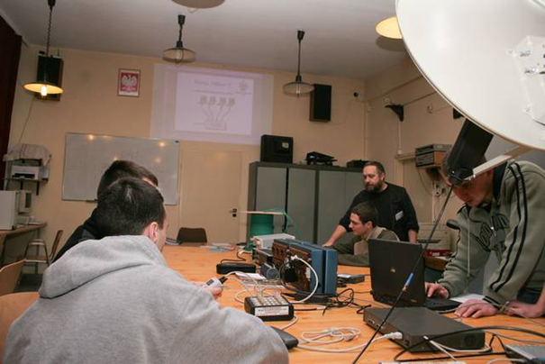
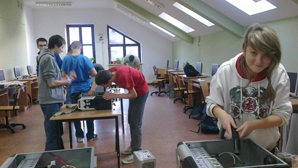
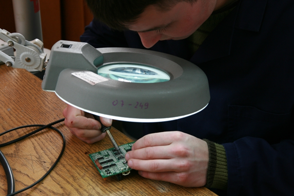

Informatyk powinien być obeznany ze współczesną technologią, dlatego na zajęciach będą omawiane
również podzespoły komputera. Dowiesz się m.in. Jak rozumieć oznaczenia poszczególnych komponentów
(np. procesora), a także jak współpracują one ze sobą.

Nabędziesz także wiele praktycznych umiejętności rozkładając i składając komputery. Dowiesz się,
jak poprawnie zamontować procesor i chłodzenie oraz jak wymienić pastę termoprzewodzącą.
Wszystkie te czynności wykonasz na lekcji pod okiem nauczyciela.

Nauczysz się również lutowania ręcznego.
